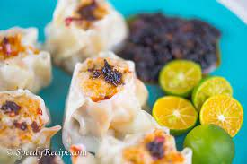

Siomai

Description
Shumai is a type of
traditional Chinese dumpling. In Cantonese
cuisine, it is usually served as a dim sum
snack. In addition to accompanying the
Chinese diaspora, a variation of shaomai
also appears in Japan and various
southeast Asian countries.
Ingredients
- 2 1/2 lbs ground pork
- 1 cup shrimp minced
- 2 sachets Knorr SavorRich Pork Seasoning 44g each
- 1 cup jicama minced
- 1 tablespoon sesame oil
- 1/4 teaspoon ground black pepper
- 1 cup onion minced
- 1 cup carrots minced
- 1 piece raw egg
- 1/2 cup scallions minced
- 30 pieces wonton wrapper
- Water for steaming
Directions
- Combine ground pork and minced shrimp in a bowl. Gradually mix together.
- Add jicama, carrot, onion, scallion, egg, ground black pepper, and sesame oil. Continue to mix until all the ingredients are well blended.
- Add Knorr SavorRich Pork Liquid Seasoning. Mix well.
- Scoop 1 1/2 tablespoons of the pork mixture and wrap in wonton wrapper (see video below for guidance). Perform this step until the mixture is fully consumed.
- Arrange in a steamer and then steam for 15 to 20 minutes.
- Transfer to a serving plate. Serve with toyo and calamansi dipping sauce and some chili garlic paste.